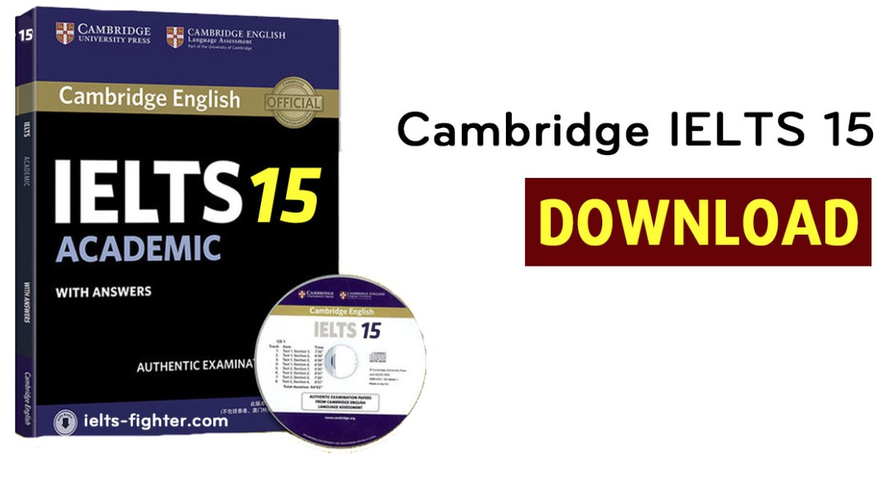
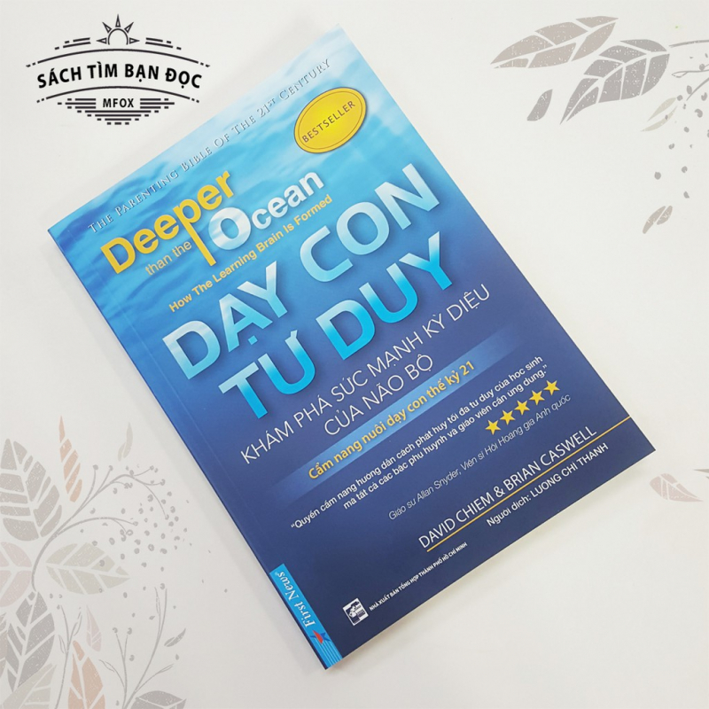

Trang chủ | Bài thơ | Phương trình | Thông Tin Sách Bổ Ích
Thông tin sách bổ ích
 Bộ đề thi được sản xuất cách đây khá lâu (từ năm 1998), nên một vài chủ đề đã lỗi thời và không còn sát với đề thi thật nữa. Cho nên, các bạn chỉ nên luyện khi có thời gian rảnh.

Cuốn sách công cụ giúp các bậc cha mẹ nói riêng và những nhà giáo dục nói chung dạy trẻ cách tư duy sáng suốt và đúng đắn trong lúc chơi đùa với trẻ. Dựa vào những nghiên cứu mới nhất về trí thông minh và cách chúng ta tư duy, tác giả đã tạo ra một loạt các tuyệt chiêu dễ sử dụng và gần gũi để các bậc cha mẹ có thể áp dụng bất cứ lúc nào có thời gian chơi với trẻ từ 4 đến 12 tuổi.
Không chỉ là những lý thuyết đơn thuần, tác giả còn đưa ra một số nguyên tắc trong cuộc sống như: nguyên tắc nỗi đau và niềm vui hay nguyên tắc để vượt qua nỗi hoài nghi một cách hợp lý. Cuộc sống chắc chắn phải có sự xen kẻ giữa niềm vui và nỗi buồn. Thay vì để những điều đó kiểm soát chính mình, tác giả đưa ra những phương pháp giúp bạn biến niềm đau thành động lực. Và từ đó biết cách kiểm soát và định hình cuộc sống tốt hơn.